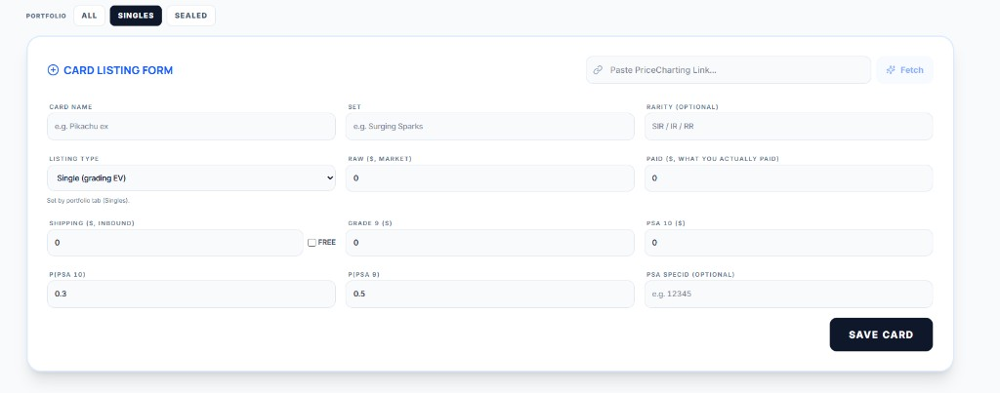
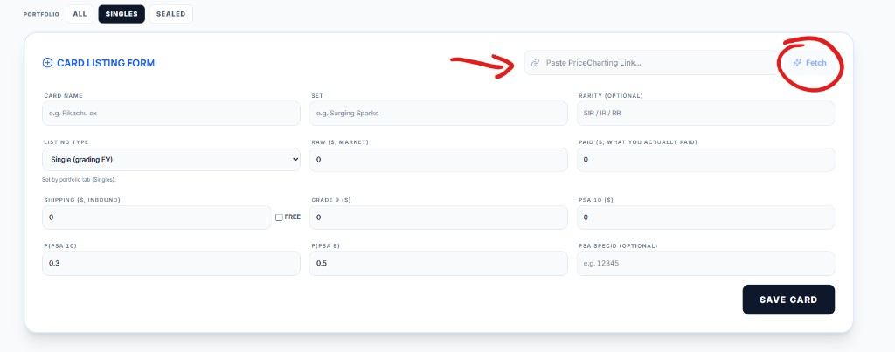
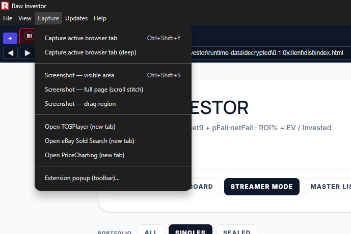

Raw Investor helps you track Pokémon (and related) singles as grading investments: paste a PriceCharting link, pull prices and images, tune grade odds and fees, and compare expected value across your portfolio.
What you see first
Open the app (browser dev build or Raw Investor desktop). Wait until the backend is online (the status badge should not show “offline”).
Use the workspace row under the header: Quick Card, Streamer Mode, Master List, Strategies, Insights, Star Chart, Arsenal, Admin, and User Guide (this document in the app).
Use Portfolio tabs (Singles / Sealed / All) to choose which kinds of items drive lists and the Quick Card picker.
Tip — Your portfolio syncs to the server when the API is available. The Admin panel shows paths to SQLite, backup vault, and export tools.
Quick start — add a card
Open a portfolio-driven view: Master List, Quick Card, or Streamer Mode.
For a graded-EV single, choose Portfolio → Singles (listing type follows the tab).
Click Add Card (or the “+” entry point) to open the Card listing form.
Paste a valid PriceCharting product URL into Paste PriceCharting Link…, then click Fetch. The app fills prices and fields from the server scrape.
Adjust any draft fields, then click Save Card.

Card listing form — paste a PriceCharting product link, then Fetch, then Save Card.

Same form — Fetch runs the import for the pasted URL.
For eBay and other flows where the embedded browser is limiting (for example some Google sign-in paths), load the
shipped unpacked MV3 in your normal Chrome or Edge profile. Captures post to the same local API as the
desktop app and merge into portfolio.db for cards and Arsenal.
Open the extension folder: resources\browser-extension-edge next to RawInvestor.exe (installed app,
portable EXE layout, or extracted win-unpacked). In the desktop app use Admin → Configuration → Chrome / Edge
capture extension → Open extension folder when that button is available.
Edge: enable Developer mode → Load unpacked → pick that folder. Chrome:
chrome://extensions → Load unpacked. Read INSTALL-MICROSOFT-EDGE.txt inside the folder for
Edge-focused steps.
Open the extension popup: set Server base to your Raw Investor API (typical local dev/desktop:
http://127.0.0.1:3001). Add optional Extension token / App token when the server is
configured for hardened headers — values must match.
Confirm the app shows the backend online, then use portfolio views and Arsenal; extension rows merge with the
same SQLite store as embedded captures.
Sold comps (API) — Optional eBay application OAuth under Admin → Configuration powers aggregate
Marketplace Insights; it complements extension capture rather than replacing it.
Menus & navigation
Raw Investor mixes in-app navigation with the desktop window menu bar (Raw Investor on Windows).
Workspace row
The primary tabs under the title bar switch views: Quick Card, Streamer Mode, Master List, Strategies, Insights, Star Chart, Arsenal, Admin, User Guide. They do not change your underlying portfolio—only how you browse it.
Portfolio tabs
All, Singles, and Sealed scope which cards drive lists, filters, and the single-card picker. If a card “disappears,” check you are not on Singles when it is stored as sealed (or the reverse).
Desktop menu bar (Raw Investor desktop)
Standard menus (File, Edit, View, …) control the window, zoom, and app shell. The Capture menu is documented below—it targets the embedded browser tabs (market sites), not the main React workspace.
Dashboards & how they differ
The same filtered portfolio drives Master List, Insights, Strategies, and Star Chart—same cards and filters, different layouts and charts.
Quick Card and Streamer Mode focus on one card at a time.
Arsenal layers hunts/targets metadata on the same cards (saved with portfolio export).
Admin is configuration, storage paths, and maintenance—not portfolio EV analytics.
They differ in presentation—like the same numbers on a spreadsheet vs. a chart vs. a single-card worksheet.
View
Best for
Notes
Quick Card Dashboard
Deep work on one card
Price sidebars, capture / refresh tools, expanded detail. Pick a card from the master scope.
Streamer Mode
Showing one card on stream
Same card story as Quick Card, tuned for presentation.
Master List
Table view of the whole portfolio
Sort, filter, bulk refresh, collections. The “source of truth” grid.
Strategies
Sell / hold planning
Bins, auto-populate, assign collections—operational workflow on filtered cards.
Insights
Portfolio analytics
Tabs: Top winners, EV chart, Market ticker, Nebula—same filters as Master List, different visuals.
Star Chart
Constellation map
Standalone Nebula visualization; click through to Quick Card.
Arsenal
Hunts & targets
Watch-style workflows layered on your cards (imported with portfolio JSON).
Admin
Configuration & maintenance
Fees, tokens, import/export, database jobs—not EV analytics.
Warning — If filters hide a card in Master List, it is also hidden from Insights / Strategies / Star Chart until you widen filters.
Managing & using cards
Add a card (summary)
Click Add Card.
Paste a valid PriceCharting product URL and click Fetch.
Review scraped prices and image, adjust draft fields if needed, then save to your portfolio.
Day-to-day use
In Master List, use column headers and filters to slice by ROI, set, sealed vs single, etc.
Use per-card actions to refresh PriceCharting (and optional eBay / extension data where configured).
Open Quick Card for the focused layout: probabilities, fees, charts, and capture helpers.
Organize with Collections from the master view when you enable the collection manager.
Tip — Global fees (grading, shipping, sale %) live in Admin → Configuration; per-card grade probabilities drive the EV model.
Import & export
All import/export controls described here live under Admin → Configuration in the Portfolio & backups area unless noted.
Method A — Full portfolio JSON
Click Export portfolio to download a JSON snapshot (cards + meta such as fees, filters, collections, Arsenal when present).
Keep this file as your human-readable backup and for moving between machines.
Click Import portfolio and choose .json (or supported variants). Large card sets are applied in server batches.
Method B — Cards only (NDJSON)
Use Export cards (NDJSON) for one JSON object per line—great for huge libraries or partial merges.
Import the same shape via Import portfolio when the file is NDJSON lines (the app detects format).
For the PriceCharting collection.csv / collection.zip workflow, use the dedicated steps in PriceCharting collection import below.
Warning — Importing can overwrite matching card IDs from a snapshot. When in doubt, export first.
PriceCharting collection import
Bulk-add cards from a PriceCharting export. Controls live under Admin → Configuration, in the Portfolio & backups area, inside Manual export / import.
In PriceCharting, export your collection as collection.csv or collection.zip.
In Raw Investor, open Admin → Configuration and scroll to Manual export / import.
Find the PRICECHARTING COLLECTION IMPORT panel. Optionally check Skip if already in collection (same PriceCharting URL or product ID) to avoid duplicates.
Click Import collection file and choose your export. The app searches, resolves product URLs, scrapes details, and creates cards.
When the run finishes, open Import Issues for failures; retry failed rows or export a retry CSV from the same panel when offered.
Card form — Paste a PriceCharting product URL and click Fetch. The server scrapes and merges into the draft card (see Quick start).
Capture menu (desktop) — Open a supported market site in an embedded browser tab, then run Capture active browser tab. The engine extracts listings or sales rows and posts them to your portfolio pipeline. You must be on a web / capture tab, not the main app workspace tab—if you see “Switch to a capture tab,” use Capture → Open … to open PriceCharting, eBay sold search, or TCGPlayer, then try again.
Chrome / Edge MV3 extension — Load the unpacked extension shipped with the Windows app (see Chrome / Edge extension) so toolbar captures post to POST /api/ext/capture and merge into your portfolio for Arsenal and charts.
Default vs deep capture
Under Capture in the window menu bar:
Capture active browser tab (Ctrl+Shift+Y) — standard pass: faster, typical page coverage.
Capture active browser tab (deep) — more thorough extraction (slower, more page interaction) when you need extra rows or a heavier pass on the same URL.
Both run on whichever active embedded tab is focused. They are separate from in-app Quick Fetch (the automated multi-site refresh from Quick Card / Admin timing)—Quick Fetch orchestrates tabs internally; the Capture menu is for manual control of the current tab.
Other Capture menu items
Screenshot — visible area (Ctrl+Shift+S), full page (scroll stitch), drag region — image capture utilities, not the same as price row extraction.
Open TCGPlayer / eBay Sold Search / PriceCharting (new tab) — opens the site in a new embedded tab so you can navigate and then capture.
Extension popup (toolbar)… — Reminder to use the toolbar puzzle menu and pin “Raw Investor Tab Capture” when using the companion extension flow.

Desktop Capture menu — default vs deep tab capture, screenshots, and quick links to market sites.
Backups & where data lives
Live data — Cards live in SQLite under your data directory (app-portfolio/portfolio.db). Meta (fees, filters, collections, Arsenal) travels with that store.
Automatic dated JSON — The app writes snapshots to a backup vault folder (separate from a factory reset of runtime data in desktop builds).
Rotating backups — Admin → Database & maintenance can run scheduled-style SQL/JSON copies (see on-screen stats after refresh).
Use Run rotating backup now when you want an immediate checkpoint before risky maintenance.
Exact folders are shown under Configuration when the API is connected—use Open in Explorer style buttons where available.
Tip — For major version jumps, export portfolio JSON before updating, as release notes recommend.
Diagnostics — Capture pipeline insight for support.
Tip — PSA token may stay in browser memory or persist depending on build flags—read the small print under the token field.
Portable vs installed (Windows)
Installed / normal desktop build
The app keeps profile data under your Windows user application data area (%AppData%).
The backup vault defaults under that profile unless you set PCGR_BACKUPS_DIR.
Portable build
When the launcher runs as a portable executable, application data is stored beside the EXE: <folder containing the EXE>/pcgr-runtime-data.
Your SQLite portfolio, extension captures, and default backup vault therefore move with the folder you copy to a USB drive.
Same UI and User Guide—only file paths differ. Use Admin → Configuration path rows to see exact directories on this PC.
Warning — If you set custom environment paths for data or backups, the portable folder layout may differ—always verify in Admin stats.
Known issues
Sniper / eBay login — Logging into eBay via Google and other SSO providers is not working in some flows; a patch is in progress.
Capture & classification — Some data points may be wrong; listings can be misclassified (for example graded vs raw). Parser and capture improvements are ongoing.
FAQ
Why does the app say the backend is offline?
The UI cannot reach the API (e.g. http://127.0.0.1:3001). Start the bundled server / use LAUNCH.bat / wait until the launcher finishes booting.
Will import wipe my whole portfolio?
Portfolio import merges snapshot fields; cards in the file replace matching IDs. Export a JSON backup before importing someone else’s file.
NDJSON vs JSON export?
JSON is the full portfolio document. NDJSON is one card JSON per line—lighter for tooling and very large libraries.
Insights looks empty but Master List has cards
Insights honors the same filters and portfolio kind scope. Clear filters or switch Singles/Sealed/All to match what you expect.
Where is the User Guide in the desktop app?
Workspace nav User Guide, or menu Help → User Guide (focuses Raw Investor and opens this page).